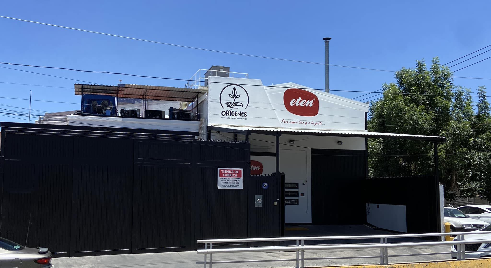
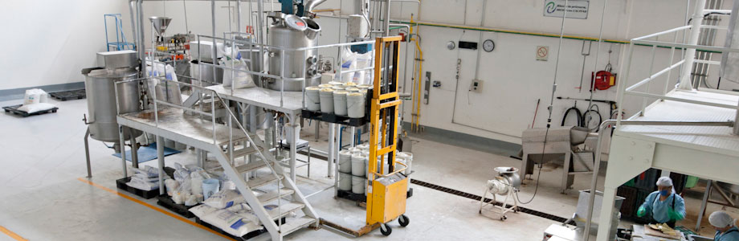
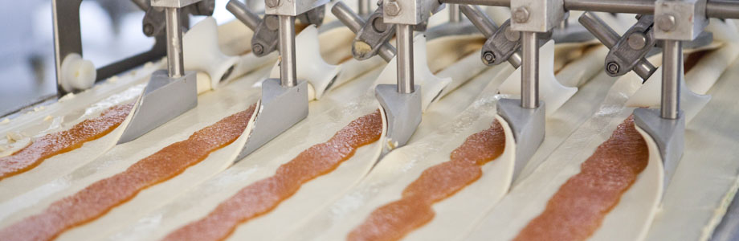

Años de experiencia
Alimentos con Principios
Alimentos prácticos, procesos responsables y consistencia para tu operación.
Desarrollamos soluciones alimentarias con sabor casero, control de calidad y enfoque operativo para negocios que necesitan responder todos los días con el mismo nivel.
Familias productoras
Foco en calidad y uniformidad

Listos para integrarse a tu cocina.
Productos pensados para rendimiento, sabor y estabilidad en servicio.

Infraestructura con criterio técnico.
Operación disciplinada para sostener calidad e higiene.

Selección enfocada en resultado final.
Materias primas que responden en sabor, textura y consistencia.

Soluciones flexibles para cada necesidad.
Catálogo base y capacidad para ajustarnos a tu operación.
Familias Productoras
Tres líneas para distintos tipos de operación.
 Rey Panadero
Rey Panadero
 Eten
Eten
Selección Destacada
Productos que mejor representan la línea del sitio.

Top ventas
Pollo en Mole Dulce
Receta tradicional con balance dulce y especiado, diseñada para servicio constante.
Ver familia
Sabor regional
Barbacoa Estilo Jalisco
Cocción lenta con perfil regional para tacos, platos fuertes y menús amplios.
Ver familia
Listo para servir
Cochinita Pibil
Sazón yucateco de cocción lenta, ideal para operación continua y servicio ágil.
Ver familia
Edición semanal
Combo Artesanal
Selección adaptable para semanas de alta demanda o menús con rotación frecuente.
Ver catálogoPor Qué Trabajamos Así
Una propuesta basada en sabor, confiabilidad y continuidad operativa.
No se trata solo de vender productos. Se trata de sostener una operación alimentaria con mejor respuesta, menos variaciones y procesos que sí ayudan a trabajar todos los días.
Calidad sostenida
Procesos diseñados para mantener uniformidad en cada lote y entrega.
Practicidad real
Opciones pensadas para integrarse rápido al servicio diario.
Control operativo
Estandarización, medición y mejora continua como parte del proceso.
Relación de largo plazo
Atención cercana para clientes que necesitan continuidad y respuesta.
Siguiente Paso